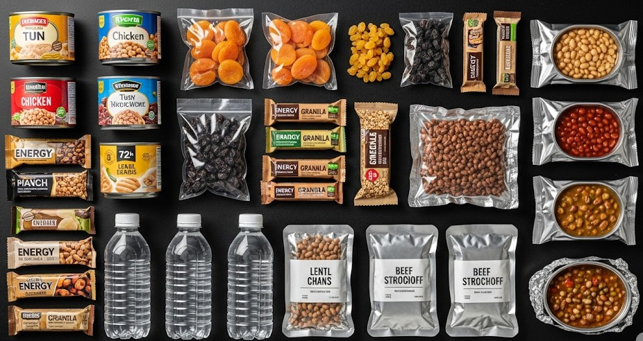

Food Without a Fridge: 72-Hour Menu
Objective
Feed a group for 72 hours without refrigeration using shelf-stable foods and minimal fuel.
Scenario (Example)
Example: Multi-day blackout; gas stove lights with a match; water available day 1.
72-Hour Menu
- Breakfast: oats + powdered milk + raisins (soak/no-cook) or quick boil.
- Lunch: crackers + tuna + oil packets; pickles for salt.
- Dinner: couscous/rice + canned beans + spices.
- Snacks: nuts, bars, PB, chocolate.
One-Pot Method
- Boil water early; fill thermos.
- Cook starch; minimal drain.
- Add protein to heat through.
- Season aggressively.
Food Safety
- Transfer leftovers from cans; eat within hours.
- Consume high-risk foods first.
- Separate utensils for raw vs. ready foods.
Water & Fuel
- 2–3 L/person/day + cooking.
- Choose quick-cook grains; soak beans.
- Ventilate; CO alarm on batteries.
Real Example
Family used a balcony stove and a thermos to avoid relighting for breakfast oats and tea.
Shopping List (72h, 2 people)
- Oats, raisins, powdered milk, honey
- Crackers, PB, tuna pouches
- Couscous/rice, beans, oil, spices
- Nuts, bars, chocolate
Contingencies
- Water off → switch to no-cook meals; disposable plates.
- No stove → eat shelf-stable items; prioritize hydration.
After-Action
Record what was eaten vs. ignored; repack a dedicated 72-hour bin.
← Previous | All Articles | Next →